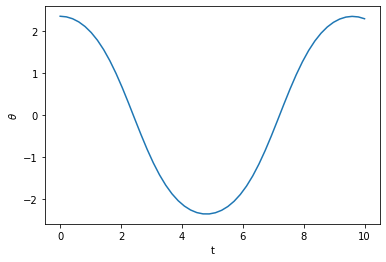
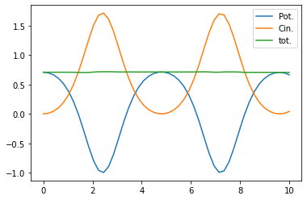

Le pendule¶
On considère l’équation : $\( \theta^{\prime\prime} = -\sin{\theta}\)$
Pour résoudre cette équation, on définit le tableau \(y(t) = (\theta(t), \theta^\prime(t))\).
Écrire la fonction Python
f(t, y)qui renvoie la dérivée de \(y\)Résoudre et tracer le resultat de l’équation différentielle pour les conditions initiales : \(\theta(0) = 2\pi/4\) et \(\theta^\prime(0) = 0\)
Vérifier que l’énergie totale est conservée
Solution¶
import matplotlib.pyplot as plt
import numpy as np
from numpy import pi
from scipy.integrate import solve_ivp
def f(t, y):
theta, theta_prime = y
return np.array([theta_prime, -np.sin(theta)])
t_eval = np.linspace(0, 10)
res = solve_ivp(f, [0, 10], [3*np.pi/4, 0], t_eval=t_eval)
plt.plot(res.t, res.y[0])
plt.xlabel('t')
plt.ylabel(r'$\theta$');

energie_potentielle = -np.cos(res.y[0])
energie_cinetique = res.y[1]**2/2
plt.plot(res.t, energie_potentielle, label='Pot.')
plt.plot(res.t, energie_cinetique, label='Cin.')
plt.plot(res.t, energie_potentielle + energie_cinetique, label='tot.')
plt.legend();
